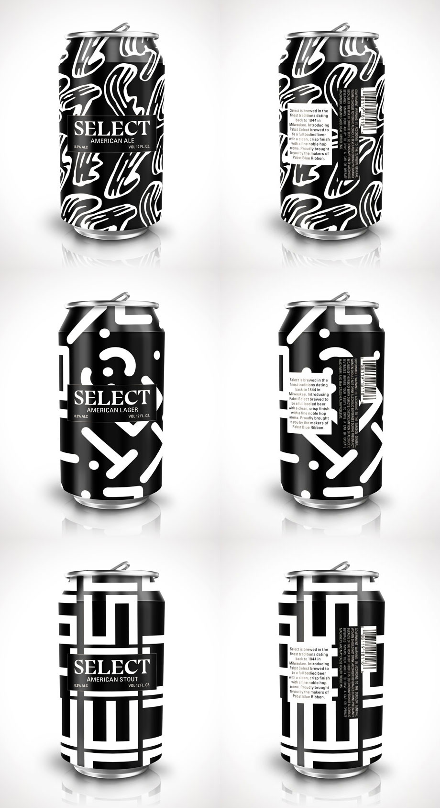
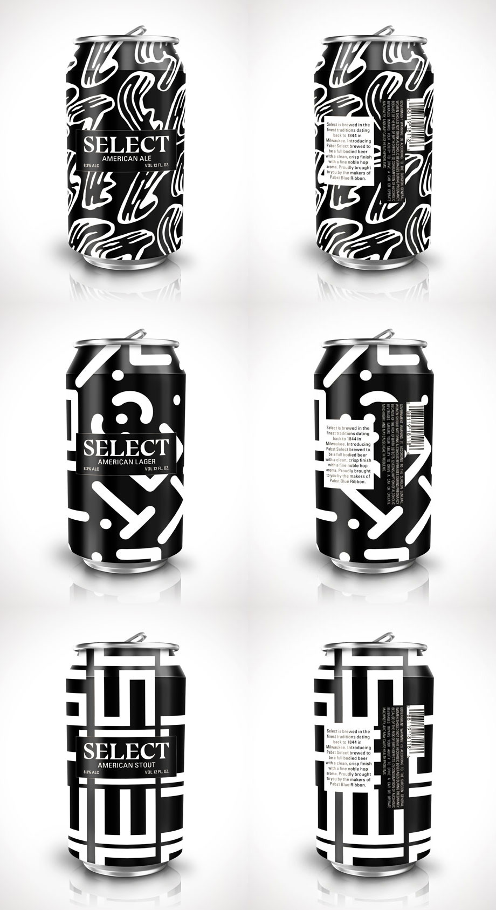

Branding assignment for Design Studio at NYU. The assignment was to create branding for Select, a fictional craft beer from the makers of Pabst Blue Ribbon. With PBR's Americana visuals and "No-Marketing Marketing," the drink is a staple for counterculture crowds. Pabst Brewing Company now seeks to expand its market by launching a craft beer targeted to an older audience.
 

I honed in on the image of Select as a beer meant for an edgy crowd. However, unlike PBR's association with indie artists, Select was the drink for art influencers who hold MoMA membership cards and attend cocktail openings at David Zwirner. Following this theme, I was interested in creating a series of craft beers whose designs play on the word "Select." Drawing inspiration from American artists like Franz Kline, Lee Krasner, and Casey Reas, I used a monochromatic palette featuring sleek letter forms to complement the idea of beer meant for a more mature consumer. The label design differs based on the type of beer and is intended for beer cans, echoing PBR's iconographic beer can designs. Ultimately, Select is the drink of choice for creatives who have grown out of the underground scene but still appreciate the noncomformist edge of PBR.